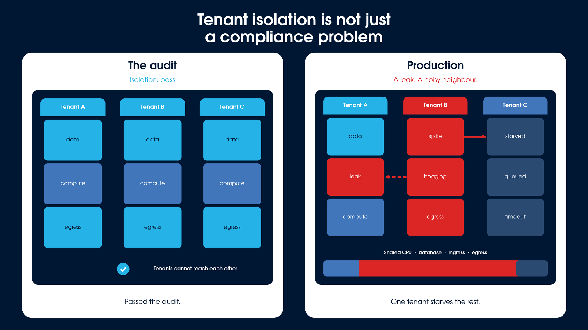

Tenant isolation is not just a compliance problem
For a regulated organisation, tenant isolation is definitely a compliance requirement for their multi-tenant platform. If you can't prove tenant isolation, you won't be able to get the green light from the auditors. Poor tenant isolation is obviously, first and foremost, a security risk. It's the possibility that a tenant will be able to read/write its data, break its business logic or leak sensitive information. That's why compliance is an absolute requirement. But tenant isolation goes beyond this.
For every resource that is shared between tenants, you run the risk of a "noisy neighbour" problem. This could be CPU/memory/network capacity (i.e. tenants running workload on the same node), or hogging the database, ingress or egress subsystems. A malicious or misconfigured tenant, even though they can't influence another tenant directly, might still be able to starve other tenants of database connections or ingress traffic, with severe consequences for the availability of the affected tenants.
Another aspect is the platform configuration. You have to ensure that all corner cases are accounted for so that a tenant's misconfiguration can't impact other tenants. For example, a bug in your platform might misconfigure a shared ingress by messing up with the firewall rules. All of a sudden, a change of configuration for tenant A negatively impacts tenant B. Despite all the efforts of your teams, bug are really hard to avoid. That's where I advocate the use of canaries. In the above case, a continuous health check would immediately pick up on the failure and raise an alert, allowing you to roll back the change straight away.
The main goal of a multi-tenant platform is to save on costs by standardising the infrastructure. This usually means finding the right trade-offs between dedicated and shared resources, and, in the latter case, how to control or mitigate the influence of tenants on said shared resources. Least-privilege permissions, rate limiting and quotas are often enough to ensure tenants are confined to their boundaries even when using resources shared with other tenants.
Or in summary: tenant isolation is at the heart of platform engineering.